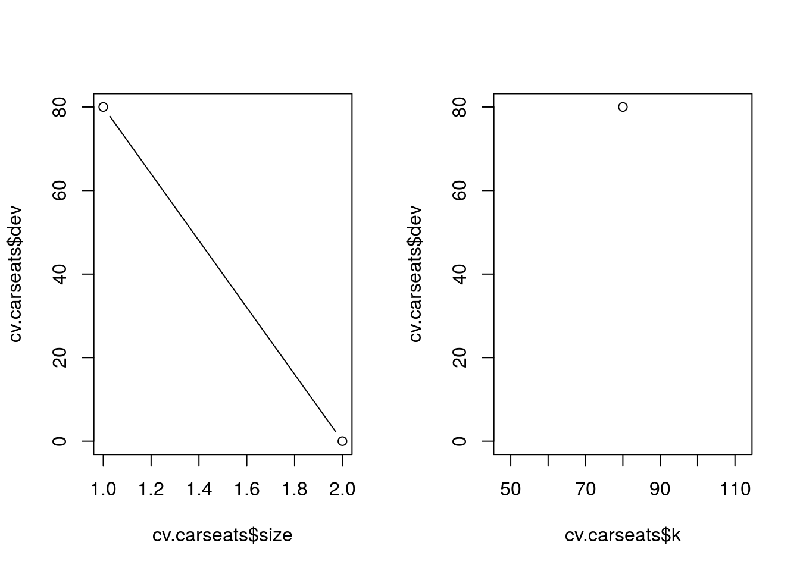
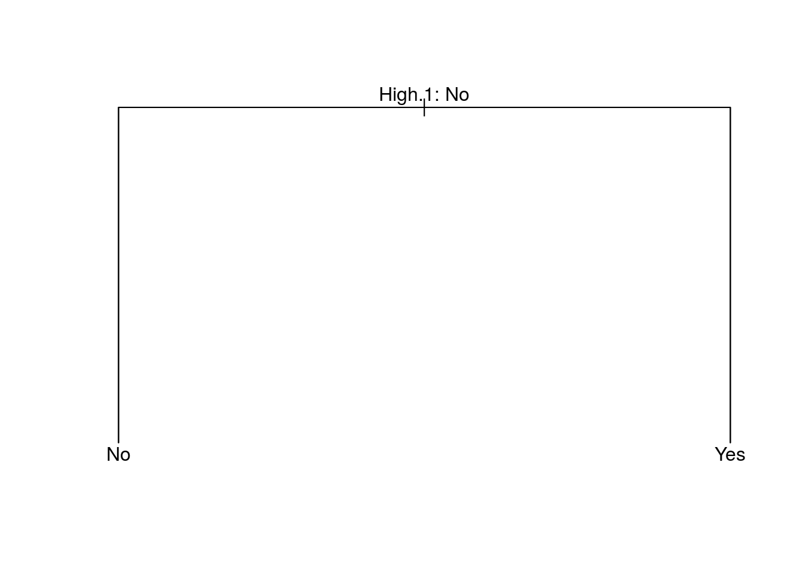
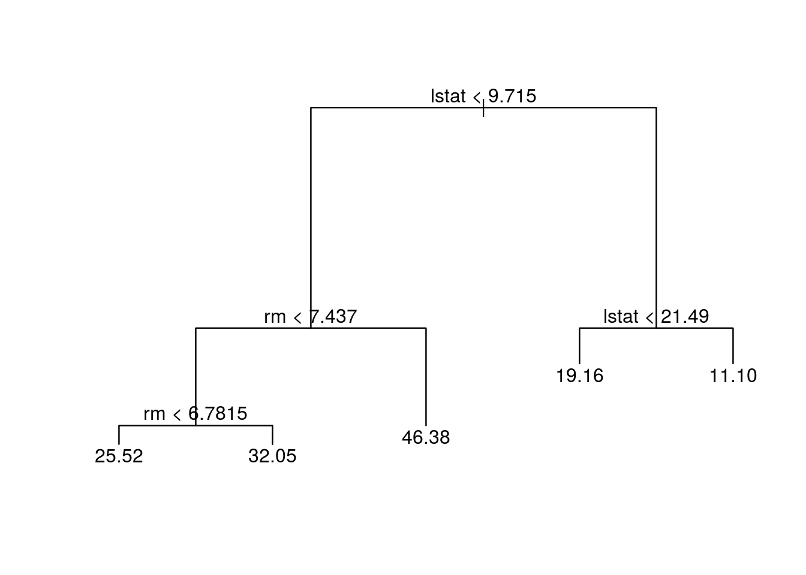
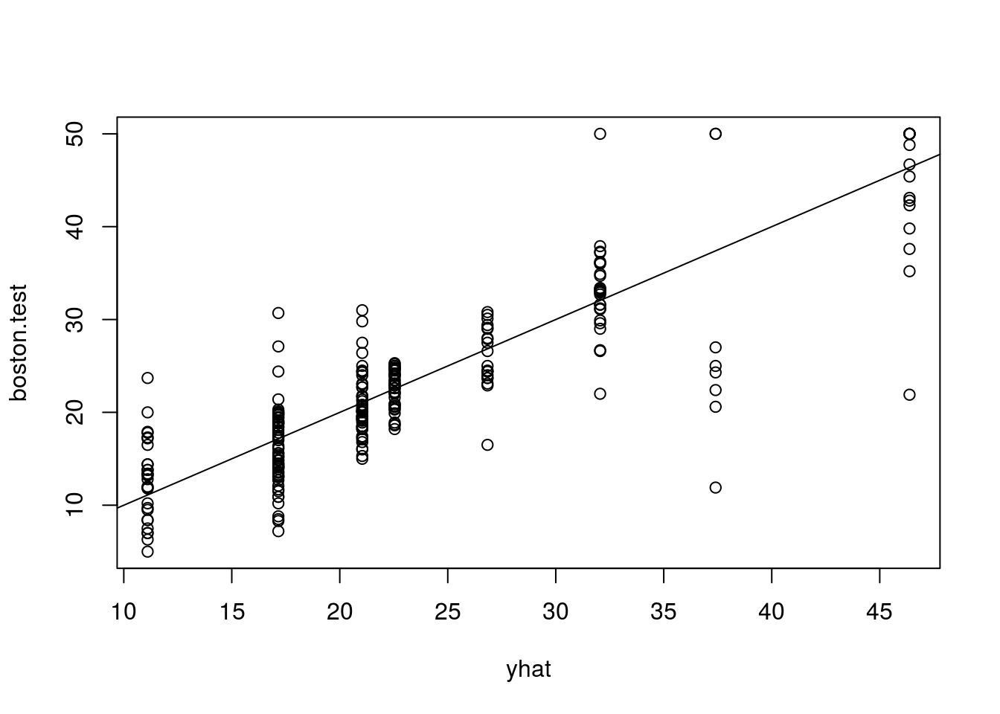
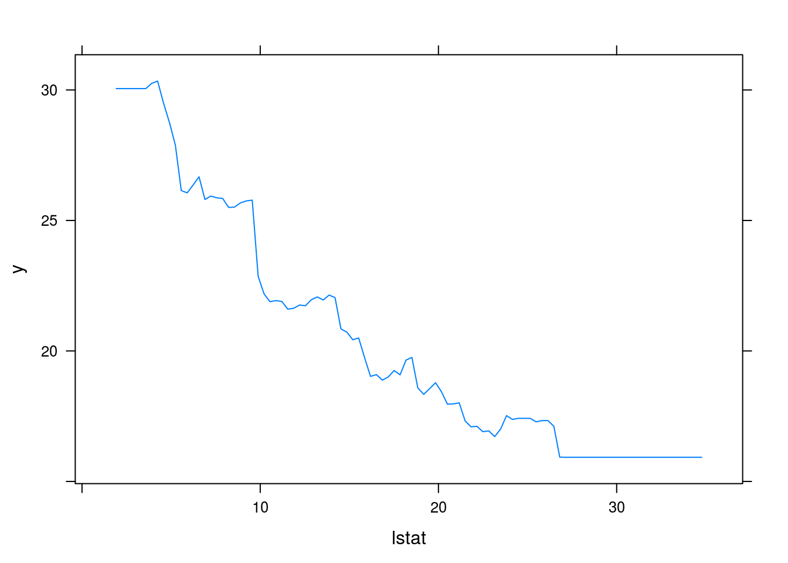

Tree-Based Methods
weiya
April 29, 2017 (update February 27, 2019)
Tree-based methods involve stratifying or segmenting the predictor space into a number of simple regions.
Since the set of splitting rules used to segment the predictor space can be summarized in a tree, these types of approaches are known as decision tree methods.
- bagging
- random forests
- boosting
Each of these approaches involves producing multiple trees which are then combined to yield a single consensus prediction.
The Basis of Decision Trees
Regression Trees
recursive binary splitting: top-down, greedy
- top-down: it begins at the top of the tree (at which point all observations belong to a single region) and then successively splits the predictor space; each split is indicated via two new branches further down on the tree.
- greedy: at each step of the tree-building process, the best split is made at that particular step, rather than looking ahead and picking a split that will lead to a better tree in some future step.
tree pruning
Classification Trees
- the most common class
- Gini index
- cross-entropy
Trees Versus Linear Models
If the relationship between the features and the response is well approximated by a linear model, then an approach such as linear regression will likely work well, and will outperform a method such as a regression tree that does not exploit this linear structure.
If instead there is a highly non-linear and complex relationship between the features and the response as indicated, then decision trees may outperform classical approaches.
Bagging, Random Forests, Boosting
Bagging
\[ \hat f_{bag}(x)=\frac{1}{B}\sum\limits_{b=1}^B\hat f^{*b}(x) \]
reduce the variance
Random Forests
As in bagging, we build a number of decision trees on bootstrapped training samples. But when building these decision trees, each time a split in a tree is considered, a random sample of \(m\) predictors is chosen as split candidates from the full set of \(p\) predictors.
Suppose that there is one very strong predictor in the data set, along with a number of other moderately strong predictors. Then in the collection of bagged trees, most or all of the trees will use this strong predictor in the top split. Consequently, all of the bagged trees will look quite similar to each other. Hence the predictions from the bagged trees will be highly correlated. Unfortunately, averaging many highly correlated quantities does not lead to as large of a reduction in variance as averaging many uncorrelated quantities. In particular, this means that bagging will not lead to a substantial reduction in variance over a single tree in this setting.
Boosting
Boosting works in a similar way, except that the trees are grown sequentially: each tree is grown using information from previously grown trees. Boosting does not involve bootstrap sampling; instead each tree is fit on a modified version of the original data set.
learns slowly.
Given the current model, we fit a decision tree to the residuals from the model. That is, we fit a tree using the current residuals, rather than the outcome \(Y\), as the response.
Boosting has three tuning parameters
- The number of trees \(B\).
- The shrinkage parameter \(\lambda\)
- The number \(d\) of splits in each tree, which controls the complexity of the boosted ensemble. stump, consisting of a single split.
Lab
Fitting Classification
library(tree)
library(ISLR)
attach(Carseats)## The following object is masked _by_ .GlobalEnv:
##
## High## The following objects are masked from Carseats (pos = 4):
##
## Advertising, Age, CompPrice, Education, High, Income,
## Population, Price, Sales, ShelveLoc, Urban, US## The following objects are masked from Carseats (pos = 6):
##
## Advertising, Age, CompPrice, Education, Income, Population,
## Price, Sales, ShelveLoc, Urban, UShead(Carseats)## Sales CompPrice Income Advertising Population Price ShelveLoc Age
## 1 9.50 138 73 11 276 120 Bad 42
## 2 11.22 111 48 16 260 83 Good 65
## 3 10.06 113 35 10 269 80 Medium 59
## 4 7.40 117 100 4 466 97 Medium 55
## 5 4.15 141 64 3 340 128 Bad 38
## 6 10.81 124 113 13 501 72 Bad 78
## Education Urban US High High.1
## 1 17 Yes Yes Yes Yes
## 2 10 Yes Yes Yes Yes
## 3 12 Yes Yes Yes Yes
## 4 14 Yes Yes No No
## 5 13 Yes No No No
## 6 16 No Yes Yes YesHigh = ifelse(Sales <= 8, "No", "Yes")
Carseats = data.frame(Carseats, High)
head(Carseats)## Sales CompPrice Income Advertising Population Price ShelveLoc Age
## 1 9.50 138 73 11 276 120 Bad 42
## 2 11.22 111 48 16 260 83 Good 65
## 3 10.06 113 35 10 269 80 Medium 59
## 4 7.40 117 100 4 466 97 Medium 55
## 5 4.15 141 64 3 340 128 Bad 38
## 6 10.81 124 113 13 501 72 Bad 78
## Education Urban US High High.1 High.2
## 1 17 Yes Yes Yes Yes Yes
## 2 10 Yes Yes Yes Yes Yes
## 3 12 Yes Yes Yes Yes Yes
## 4 14 Yes Yes No No No
## 5 13 Yes No No No No
## 6 16 No Yes Yes Yes Yestree.carseats = tree(High~.-Sales, Carseats)
summary(tree.carseats)##
## Classification tree:
## tree(formula = High ~ . - Sales, data = Carseats)
## Variables actually used in tree construction:
## [1] "High.1"
## Number of terminal nodes: 2
## Residual mean deviance: 0 = 0 / 398
## Misclassification error rate: 0 = 0 / 400plot(tree.carseats)
text(tree.carseats, pretty = 0)
In order to properly evaluate the performance of a classification tree on these data, we must estimate the test error rather than simply computing the training error.
set.seed(2)
train = sample(1:nrow(Carseats), 200)
Carseats.test = Carseats[-train, ]
High.test = High[-train]
tree.carseats = tree(High~.-Sales, Carseats, subset = train)
tree.pred = predict(tree.carseats, Carseats.test, type = "class")
table(tree.pred, High.test)## High.test
## tree.pred No Yes
## No 116 0
## Yes 0 84use the argument FUN=prune.misclass in order to indicate that we want the classification error rate to guide the cross-validation and pruning process, rather than the default for the cv.tree() function, which is deviance.
set.seed(3)
cv.carseats = cv.tree(tree.carseats, FUN = prune.misclass)
names(cv.carseats)## [1] "size" "dev" "k" "method"# size: the number of terminal nodes of each tree considered
# dev: corresponds to the cross-validation error rate in this instance.
# k: the value of the cost-complexity parameter used
cv.carseats## $size
## [1] 2 1
##
## $dev
## [1] 0 80
##
## $k
## [1] -Inf 80
##
## $method
## [1] "misclass"
##
## attr(,"class")
## [1] "prune" "tree.sequence"par(mfrow = c(1, 2))
plot(cv.carseats$size, cv.carseats$dev, type = "b")
plot(cv.carseats$k, cv.carseats$dev, type = "b")
apply the prune.misclass() function in order to prune the tree to obtain the nine-node tree.
prune.carseats = prune.misclass(tree.carseats, best = 9)## Warning in prune.tree(tree = tree.carseats, best = 9, method = "misclass"):
## best is bigger than tree sizeplot(prune.carseats)
text(prune.carseats, pretty = 0)
tree.pred = predict(prune.carseats, Carseats.test, type = "class")
table(tree.pred, High.test)## High.test
## tree.pred No Yes
## No 116 0
## Yes 0 84If we increase the value of best , we obtain a larger pruned tree with lower classification accuracy
prune.carseats = prune.misclass(tree.carseats, best = 15)## Warning in prune.tree(tree = tree.carseats, best = 15, method =
## "misclass"): best is bigger than tree sizeplot(prune.carseats)
text(prune.carseats, pretty = 0)
tree.pred = predict(prune.carseats, Carseats.test, type = "class")
table(tree.pred, High.test)## High.test
## tree.pred No Yes
## No 116 0
## Yes 0 84Fitting Regression Trees
library(MASS)
head(Boston)## crim zn indus chas nox rm age dis rad tax ptratio black
## 1 0.00632 18 2.31 0 0.538 6.575 65.2 4.0900 1 296 15.3 396.90
## 2 0.02731 0 7.07 0 0.469 6.421 78.9 4.9671 2 242 17.8 396.90
## 3 0.02729 0 7.07 0 0.469 7.185 61.1 4.9671 2 242 17.8 392.83
## 4 0.03237 0 2.18 0 0.458 6.998 45.8 6.0622 3 222 18.7 394.63
## 5 0.06905 0 2.18 0 0.458 7.147 54.2 6.0622 3 222 18.7 396.90
## 6 0.02985 0 2.18 0 0.458 6.430 58.7 6.0622 3 222 18.7 394.12
## lstat medv
## 1 4.98 24.0
## 2 9.14 21.6
## 3 4.03 34.7
## 4 2.94 33.4
## 5 5.33 36.2
## 6 5.21 28.7set.seed(1)
train = sample(1:nrow(Boston), nrow(Boston)/2)
tree.boston = tree(medv~., Boston, subset = train)
summary(tree.boston)##
## Regression tree:
## tree(formula = medv ~ ., data = Boston, subset = train)
## Variables actually used in tree construction:
## [1] "lstat" "rm" "dis"
## Number of terminal nodes: 8
## Residual mean deviance: 12.65 = 3099 / 245
## Distribution of residuals:
## Min. 1st Qu. Median Mean 3rd Qu. Max.
## -14.10000 -2.04200 -0.05357 0.00000 1.96000 12.60000plot(tree.boston)
text(tree.boston, pretty = 0)
cv.boston = cv.tree(tree.boston)
plot(cv.boston$size, cv.boston$dev, type = "b")
prune.boston = prune.tree(tree.boston, best = 5)
plot(prune.boston)
text(prune.boston, pretty = 0)
yhat = predict(tree.boston, newdata = Boston[-train, ])
boston.test = Boston[-train, "medv"]
plot(yhat, boston.test)
abline(0, 1)
mean((yhat-boston.test)^2)## [1] 25.04559Bagging and Random Forests
library(randomForest)
set.seed(1)
ncol(Boston)## [1] 14# p = 14-1 = 13
bag.boston=randomForest(medv~., data = Boston, subset = train, mtry=13, importance = TRUE)
# change the number of trees grown by randomForest() using the ntree argument
bag.boston##
## Call:
## randomForest(formula = medv ~ ., data = Boston, mtry = 13, importance = TRUE, subset = train)
## Type of random forest: regression
## Number of trees: 500
## No. of variables tried at each split: 13
##
## Mean of squared residuals: 11.15723
## % Var explained: 86.49How well does this bagged model perform on the test set?
yhat.bag = predict(bag.boston, newdata = Boston[-train, ])
plot(yhat.bag, boston.test)
abline(0, 1)
mean((yhat.bag-boston.test)^2)## [1] 13.50808set.seed(1)
rf.boston = randomForest(medv~., data = Boston, subset = train, mtry = 6, importance = TRUE)
yhat.rf = predict(rf.boston, newdata = Boston[-train, ])
mean((yhat.rf-boston.test)^2)## [1] 11.66454importance(rf.boston)## %IncMSE IncNodePurity
## crim 12.132320 986.50338
## zn 1.955579 57.96945
## indus 9.069302 882.78261
## chas 2.210835 45.22941
## nox 11.104823 1044.33776
## rm 31.784033 6359.31971
## age 10.962684 516.82969
## dis 15.015236 1224.11605
## rad 4.118011 95.94586
## tax 8.587932 502.96719
## ptratio 12.503896 830.77523
## black 6.702609 341.30361
## lstat 30.695224 7505.73936varImpPlot(rf.boston)
Boosting
library(gbm)## Loaded gbm 2.1.5set.seed(1)
boost.boston = gbm(medv~., data = Boston[train, ], distribution = "gaussian", n.trees = 5000, interaction.depth = 4)
summary(boost.boston)
## var rel.inf
## lstat lstat 37.0661275
## rm rm 25.3533123
## dis dis 11.7903016
## crim crim 8.0388750
## black black 4.2531659
## nox nox 3.5058570
## age age 3.4868724
## ptratio ptratio 2.2500385
## indus indus 1.7725070
## tax tax 1.1836592
## chas chas 0.7441319
## rad rad 0.4274311
## zn zn 0.1277206par(mfrow=c(1,2))
plot(boost.boston, i="rm")
plot(boost.boston, i="lstat")
use the boosted model to predict medv on the test set:
yhat.boost = predict(boost.boston, newdata = Boston[-train, ], n.trees = 5000)
mean((yhat.boost - boston.test)^2)## [1] 10.81479choose a different \(\lambda\)
boost.boston = gbm(medv~., data = Boston[train, ], distribution = "gaussian", n.trees = 5000, interaction.depth = 4, shrinkage = 0.2, verbose = F)
yhat.boost = predict(boost.boston, newdata = Boston[-train, ], n.trees = 5000)
mean((yhat.boost - boston.test)^2)## [1] 11.51109Copyright © 2016-2019 weiya